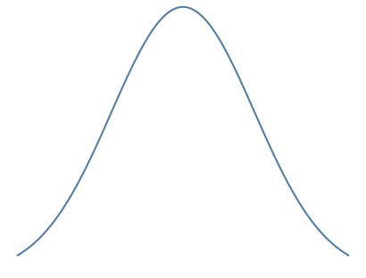
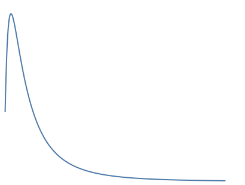
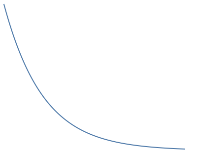
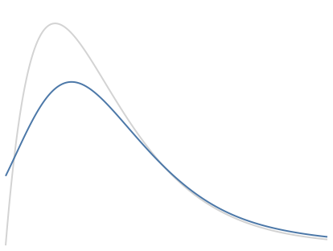
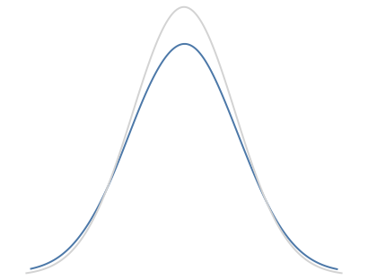
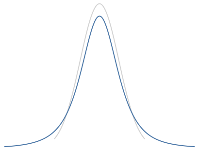

Distributions used in the simulator¶
Distributions can generally be characterized as symetric or asymetric, as well as heavy-tailed or light-tailed []. The distributions below were chosen becasue they cover each of these broad categorizations and have also been previously examined in research on robustness []. For most distributions shapes below, the simulator allows users to interactively adjust a parameter that casues changes in the tail(s) of the distribution.
Normal distribution¶

Lognormal distribution¶

Exponential distribution¶

Contaminated Chi-squared distribution¶

Contaminated normal distribution¶

(see Wilcox 2003 - Modern robust...)
Student's T¶
